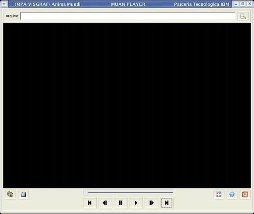
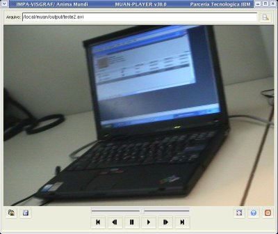
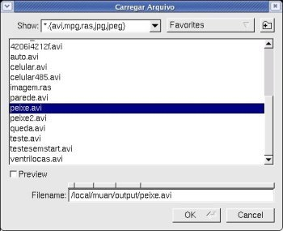
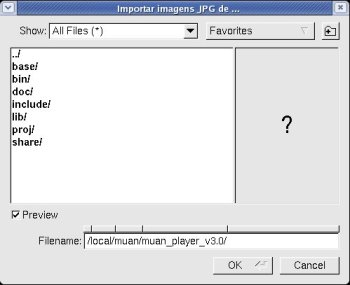
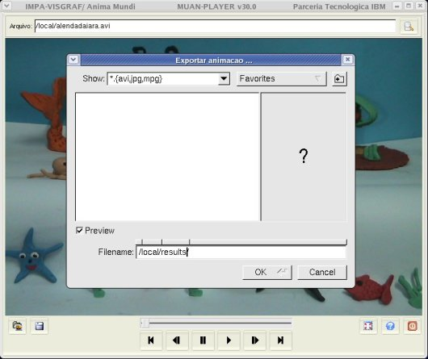

MUAN_PLAYER - Manual do Usuário
|
|
|
MUAN_PLAYER - Manual do Usuário |
O MUAN_PLAYER é uma ferramenta de apoio ao sistema MUAN desenvolvido para permitir de forma simples, rápida e fácil a visualizacão das animacões geradas pelo MUAN, assim como tocá-las. Este aplicativo não abre conexão com câmeras, então mesmo em computadores que não têm equipamentos de captura acoplados, é possível visualizar/tocar animações.

Modo de usar
>
muan_player [arquivo]
Caso seja passado o
nome de um arquivo com parâmetro, a aplicação será iniciada
já com a animação carregada.
|
Utilize o campo
arquivo para especificar o nome do arquivo (com caminho completo) da
animação
que deseja tocar. Para carregá-la, tecle ENTER.
|
 |
Principais comandos
Painel central do MUAN onde é exibida a animacão.
Controle indicador do frame corrente. Indica a posição do frame corrente dentro da animação.
Posiciona o frame corrente no
primeiro frame da animação.
Tecla de Atalho: HOME
Volta a posição do
frame corrente de 1 posição.
Tecla de Atalho: <
Congela (pára) a
execução da animação.
Tecla de Atalho: PAUSE
Executa a animação.
Tecla de Atalho: CTRL+ENTER
Incrementa a
posição do frame corrente de 1 posição.
Tecla de Atalho: >
Posiciona o frame corrente no
último frame da animação.
Tecla de Atalho: END
Carrega uma
animação ou imagem previamente salva. Formatos
suportados: avi, mpg, ras e jpg.
Tecla de Atalho: CTRL+G

Indica o nome do arquivo em uso que
está sendo exibido no painel de imagens. Pode ser usado
também para carregar um arquivo, bastando digitar o nome do
arquivo desejado e teclar ENTER.
Botão Importar lista de imagens JPG
Importa todas as imagens JPG do
diretório selecionado na tela que se abre, seguindo a ordem
alfanumérica.
Tecla de Atalho: CTRL+M

Exporta a animação corrente para um novo formato. Extensões disponíveis:
Tecla de Atalho: CTRL+E
Importante: Na tela de exportação, dê o nome do arquivo com a extensão (formato) desejado. Por exemplo: teste.mpg para que o arquivo seja salvo no formato mpeg1.

Coloca o aplicativo no modo tela
cheia, ou seja, toda a tela do monitor fica preenchida apenas com o painel de imagens. Para voltar ao modo
normal da tela, utilize a tecla ESC.
Tecla de Atalho: ALT+ENTER
Abre este manual em um browser.
Sai do aplicativo.
Tecla de Atalho: ESC
| Coordenação |
Desenvolvimento |
Parceria Tecnológica |